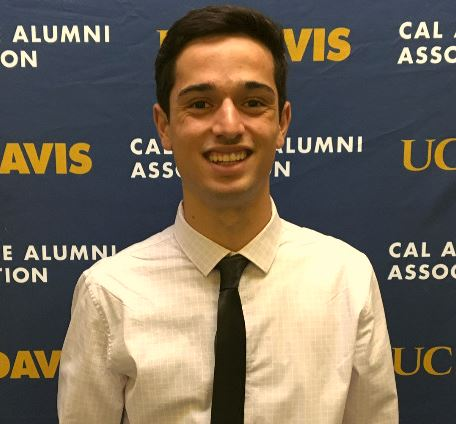

About Our Team

Scott Putty is a civil engineering major that has extensive experience with flood routing and modeling flow conditions in the San Joaquin, Sacramento, and Feather River watersheds. He also participates on the UC Davis ASCE Environmental Project, whose goal is to design and construct an on-site water treatment system in a competition environment.